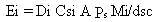
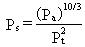
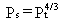
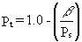
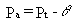
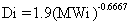
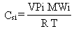

2.7 LANDFILLS WITHOUT INTERNAL GAS GENERATION
Landfills
are differentiated from contaminated soil; volatile or semivolatile organics
tend to occur in concentrated form within the landfill. A good example
would be a landfill with volumes of leaking drums containing volatile organics
covered with a layer of soil. The "Landfill" model presented below is also
different than the "Contaminated Soil" model described above in that the
emission rate is assumed to have reached a steady-state condition and thus
is not changing with time.
EPA's (1988, 1990) model for computing volatilization rates from "landfills
without internal gas generation" is implemented in the user-interface (AG-VCASE
= 1) of MEPAS 3.n versions. The model is based on Fick's first law of steady-state
diffusion as developed by Farmer et al. (1978). Diffusion from the landfill
to the atmosphere is assumed to occur from the reservoir of organic contaminants
in the landfill through the landfill cover. The subsurface soil concentrations
are assumed to be uniform. Processes such as biodegradation, transport
in water, adsorption, and landfill gas production are not included in the
model development; the diffusion of the constituents in the soil is assumed
to be the controlling mechanism for vapor transport.
Farmer's original model was modified and simplified by EPA (1980), Farino
et al. (1983), and Shen (1981). The simplification included the assumption
that the soil was completely dry to provide maximum volatilization rates
based on the fact that diffusion in the pores in air is greater than diffusion
in the pores in water. The MEPAS implementation of this model uses an expression
that allows for soil moisture and comparison of results based on factors
such as climatological differences. This expression can be simplified to
a dry soil condition if the situation warrants. The resultant equation
for the steady-state volatilization rate is

(17)
where
Ei = emission rate of constituent i (g/s)
Di = diffusion coefficient of constituent i in air (cm2/s)
Csi = saturated vapor concentration of constituent i (g/cm3)
A = exposed area where emissions occur (cm2)
Ps = the ratio of air-filled soil porosity to total soil porosity
(dimensionless)
Mi = weight fraction of constituent i in the waste (g/g)
dsc = effective depth of soil cover (cm).
Equation 17 assumes that there is a soil cover above waste through which
diffusion progresses. When no cover is assumed, Equation 17 is inappropriate
(dsc = 0 implies an infinite emission rate). The soil moisture is
accounted for ny replacing the total soil porosit with a porosity ratio
term. This replacement was originally suggested by Millington and Quirk
(1961) asn was summarized by Hwang (1982) for application to toxic air
emissions. This rate was defined as

(18)
where Pt is the total soil porosity
(dimensionless) and Pa is the air-filled soil porosity (dimensionless).
When it can be assumed that the soil is dry, then Equation 18 simplifies
to

(19)
The total soil porosity and the air-filled porosity may be based on the
soil types. The percentage sand, silt, and clay may be obtained from U.S.
Soil Conservation Service reports. In the rare case where the soil is completely
dry, the air-filled porosity becomes the total soil porosity, and Ps
given by Equation 18 applies as occurs in the original formulation of Equation
17. The total porosity for a dry soil is calculated as

(20)
where b
is the bulk density of the soil (g/cm3), and Ps is
the particle density (g/cm3), usually 2.65 for mineral material.
The air-filled porosity, Pa, can be calculated using the total soil porosity
minus the soil's field capacity for water as noted in EPA (1988), Fenn
et al. (1975), Lynsley et al. (1975), Eagleson (1970), Hanks and Ashcroft
(1980), and Israelsen and Hansen (1962). The equation for computing air-filled
porosity is
(
(21)
where q
is the soil's percent field capacity for water (dimensionless).
If the diffusion coefficient for the constituent
is unknown, it can be calculated using the following empirical relationship
(O'Connor and Muller 1980):

(22)
where MWi = molecular weight of constituent
i (g/mole).
When the landfilled waste constitutes a pure
material, the molecular weight, air temperature, and vapor pressure of
a constituent are needed to compute the vapor-phase concentration, Csi,
using an equation from EPA (1980):

(23)
where Csi = saturated vapor concentration
of constituent i (g/cm3)
VPi = saturated vapor pressure of constituent i (mm Hg)
MWi = molecular weight of constituent i (g/mole)
R = molar gas constant (6.23 x 104 cm3 mm Hg/°
K-mol)
T = annual average air temperature(° K).
Equation 16 was originally presented by Farmer
et al. (1978) based on an experiment conducted for diffusion of a pure
compound through soil. Hexachlorobenzene was the material held on a reservoir
for diffusion experiments.